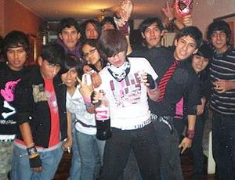

Tribus urbanas de Bogotá
 De: La Frikipedia, la enciclopedia extremadamente seria.
De: La Frikipedia, la enciclopedia extremadamente seria.
Las tribus urbanas de Bogotá nacen como resultado de la marcada estratificacion social de Bogotá, los altos consumos de marihuana, la globalización y el comercio de música y marcas.
Como ciudad Metropolis Bogotá recibe cada año la llegada de una nueva tribu urbana que suele tener de enemiga otra tribu.
Adaptacion de las tribus urbanas en Bogotá
- Los metachos son probablemente la tribu mas grande al estar presentes en todas las clases sociales sin embargo solo nos damos cuenta de esto en Rock al Parque, luego siguen los ñeros y los gomelos, mucho mas faciles de encontrar dependiendo de la ubicacion en la que nos encontremos.
- Algunas estan en via de extincion, o su status en la sociedad es inactivo como el caso de los rudos, los raperos puros y los hardcoreros.
- Las ideologias originales de estas tribus no suelen ser respetadas por sus seguidores en Bogota; el ejemplo mas claro es que los emos son bastante felices, nunca se cortan las venas ni mucho menos llegan a suicidarse. Los skinheads no aceptan su ascendencia indigena y algunos de hecho son ironicamente morenos. Los raperos no saben hacer buenos graffitis y a duras penas saben freestyle.
- Usualmente lo que se importa a Bogotá es la vestimenta y musica del susodicho estilo, sus creencias o practicas suelen quedarse en el pais de origen, asi pues un Rastafari caspero bogotano puede estar buscando solo una excusa para fumar marihuana. Asi pues los peinados, prendas de vestir y demas son copiados y se deja atras cualquier cultura que traiga consigo el movimiento.
- Los Emos representan la cultura mas creciente, sin embargo ellos mismos no saben que van a hacer con toda la ropa y adornos que compraron, cuando llegue una moda nueva, asi mismo no sabran que explicacion darles a sus hijos por haber sido emos en su juventud.
Curiosidades varias
- Por algun motivo todos los punketos son demasiado altos y flacos.
- Los metachos, ñeros, punketos y skinheads suelen verse intimidantes.
- Las emos suelen estar muy buenas y ser bastante huecas, los emos hombres suelen ser cacorros.
- En Rock al Parque (también conocido como Porro al Parque) los mas afectados por actos violentos (aparte de la policía) son los emos, quienes suelen ser agredidos por los punketos.
- Los punk son los mas odiados por los adultos, los emos son los mas odiados por los jovenes.
- Los guisos son los mas mimetizables, pueden llegar a verse como reggaetoneros o inclusive como tecktonicos.
- Los mas presentes en las protestas son los Punks y los skinheads.
- Música característica: Metal y sus infinitos derivados.
- Clase social: presente en cualquier clase social.
- Droga favorita: Marihuana
- Enemigo predilecto: Posers o falsos metaleros.
- Hábitat: bares de metal donde puedan embriagarse.
- Música característica: Rap, Reggaeton
- Clase social: presente en clases sociales bajas.
- Droga favorita: Marihuana, Boxer, Basuco (de muy mala calidad).
- Enemigo predilecto: todas las otras tribus.
- Hábitat: calles desoladas, potreros, lomas, la esquina o cualquier otro sitio donde puedan abordar a alguien para robarlo.
- Música característica: Reggaeton u otros generos bailables.
- Clase social: presente en clases sociales bajas y medias.
- Droga favorita: sin definir
- Enemigo predilecto: Gomelos
- Hábitat: la 51 o cualquier rumbiadero crossover donde puedan bailar reggaeton.
- Música característica: Cumbias argentinas
- Clase social: presente en clases sociales medias y bajas.
- Droga favorita: Marihuana
- Enemigo predilecto: otros barristas que apoyen un equipo de fútbol distinto
- Hábitat: el estadio de fútbol donde practican su arte marcial y su punteria.
- Música característica: Rap, Hip-Hop
- Clase social: presente en clases sociales medias y bajas.
- Droga favorita: Marihuana
- Enemigo predilecto: raperos de otras pandillas u otros barrios.
- Hábitat: las calles o parques donde puedan hacer freestyle y pelear contra otras pandillas de raperos, las comunas de medallo.
- Música característica: punk y derivados.
- Clase social: presente en cualquier clase social.
- Droga favorita: todas
- Enemigo predilecto: neopunks, posers
- Hábitat: parques, andenes o el centro de Bogotá donde puedan reunirse a embriagarse o drogarse.
- Música característica: Ska y derivados.
- Clase social: presente en clases sociales medias.
- Droga favorita: sin definir
- Enemigo predilecto: sin definir
- Hábitat: centro de la ciudad.
- Música característica: Ska Indy y sus derivados.
- Clase social: presente en cualquier clase social.
- Droga favorita: sin definir
- Enemigo predilecto: sin definir
- Hábitat: bares de rock
- Música característica: Grunge y rock alternativo.
- Clase social: media, media-baja.
- Droga favorita: marihuana.
- Enemigo predilecto: Gomelos y Floggers.
- Hábitat: Universidades públicas.
 Emos de parranda, notese que su licor es la
cocacola - Música característica: Neopunk y sus derivados.
- Clase social: presente en clases sociales medias y altas (actualmente en decadencia).
- Droga favorita: sin definir
- Enemigo predilecto: ellos mismos o sus padres por no comprenderlos y hacerlos sufrir.
- Hábitat: centros comerciales de ricos.
- Música característica: Reggae y sus derivados.
- Clase social: presente en cualquier clase social.
- Droga favorita: Marihuana
- Enemigo predilecto: punketos
- Hábitat: centro de la ciudad
- Música característica: Hardcore Rock Punk y sus derivados.
- Clase social: presente en clases sociales medias.
- Droga favorita: coquilla, aunque los SxE no consumen ninguna maricada.
- Enemigo predilecto: reggeatoneros.
- Hábitat: centro de la ciudad, bares de rock.
Aunque nadie se lo esperaba, Krilin es Skinhead
- Música característica: Punk
- Clase social: presente en clases sociales medias y altas.
- Droga favorita: sin definir
- Enemigo predilecto: todo el mundo
- Hábitat: el centro de Bogota, donde se divierten golpeando a sus victimas
- Música característica: Tropipop, Tecno
- Clase social: presente en clases sociales medias/altas y altas.
- Droga favorita: las compras
- Enemigo predilecto: ñero
- Hábitat: centros comerciales, el Cha-Cha o cualquier otro bar para millonarios.
- Música característica: Electro y sus infinitos derivados.
- Clase social: presente en clases sociales medias.
- Droga favorita: Sin definir
- Enemigo predilecto: Las baldosas de Gran Estacion
- Hábitat: farreaderos de musica electronica
- Música característica: Electro, DnB y sus infinitos derivados.
- Clase social: presente en clases sociales medias y altas.
- Droga favorita: Popper, Tripi, Heroina
- Enemigo predilecto: sin definir
- Hábitat: entrañas de Bogota, farreaderos de musica electronica
- Música característica: Jpop, Jrock
- Clase social: presente en clases sociales medias y altas.
- Droga favorita: Anime
- Enemigo predilecto: los enemigos de los personajes de sus series de anime, tales como freezer, cell, etcetera. O sus enemigos de juegos de mmorpg.
- Música característica: Tectonik
- Clase social: presente en clases sociales medias (aunque ultimamente es muy común en las bajas).
- Droga favorita: Dick
- Enemigo predilecto: Toda la sociedad
- Hábitat: Gran Estación (Aunque ultimamente ha disminuido esto)
- Música característica: Cualquiera
- Clase social: Antes estaba presente en clases media y alta, pero ahora cualquiera de clase baja.
- Droga favorita: Pegante, boxer, bareta (El mas económico)
- Enemigo predilecto: Barristas, Skins, Ñeros
- Hábitat: Salitre, Portal 80, Plaza de las amaricas, Andino (aunque no tengan dinero para poder adquirir algo de este)
- Música característica: deathrock, gothrock, darkwave y cosa por ese estilo el doom metal es casposo para ellos
- Clase social: altas y medias
- Droga favorita: absenta
- Enemigo predilecto: cualquiera de otra tribu
- Hábitat: los rincones oscuros, ultimamente hacen muchos toques en localidades como chapinero, y el norte, centros de poesia lugares de arquitectura colonial
Véase también
Autor(es):
- Diegocon13
- Lucholuis123
- Ultrageno
- Reybendayana
- Gororo
- Davinci16631
- AlejandroMazabel
- Hijo de Odín
- Nana08
- Generibot
Frikipedia 2005-2016, Licencia
GFDL 1.2 - Extraído por FrikiLeaks